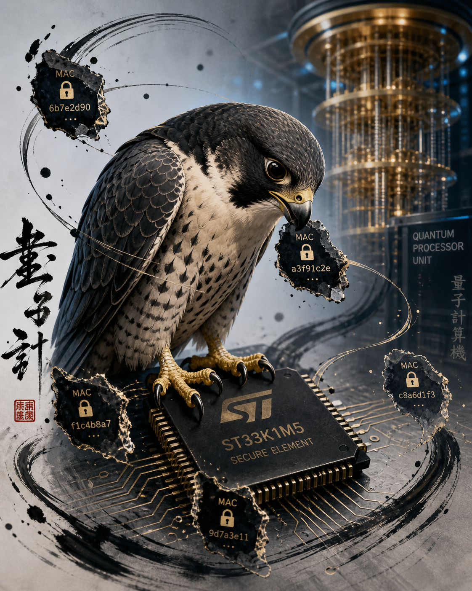

Unlimited working memory in constrained hardware using authenticated streaming — FALCON1024 with 32KB of RAM - Ledger/ST33
2026 Apr 30
See all posts
Unlimited working memory in constrained hardware using authenticated streaming — FALCON1024 with 32KB of RAM - Ledger/ST33

(ST33 FALCON)
Introduction
We are releasing a complete implementation of the Falcon post-quantum
signature scheme — both Falcon-512 and
Falcon-1024 parameter sets, running natively inside a
Ledger Nano S+ secure element. The implementation covers BIP-32 derived
seed, on-device key generation, full streaming key expansion, on-device
hash-to-point, and a working sign-then-verify chain. As far as we know,
no other hardware wallet runs Falcon at full parameter size with
mnemonic-only recovery.
The construction is the counterpart of the
ZK clear signing work we shipped earlier: in that one, public
computation was delegated to an untrusted prover and the device verified
a constant-size proof. In this one, secret-bearing memory is delegated
to an untrusted host and the device authenticates each chunk before
consuming it.
This post explains the underlying principle: delegate bounded-RAM
working state to an untrusted host, applies it to Falcon, whose expanded
private key is three to four times larger than the entire SRAM available
on the device, and gives the test results that establish conformance
with the NIST round 3 reference.
The
general principle: delegating memory without trust
When a cryptographic operation needs more working memory than the
device can hold, there are two options. Drop the algorithm and pick one
that fits. Or keep the working memory on a host machine and let the
device read from it as needed. The host is untrusted, so any value the
device pulls back must be assumed adversarial unless we do something
about it.
The standard fix is symmetric authenticated encryption. The device
generates a fresh symmetric key k from its own secret
material, encrypts each block of working memory under k
with an authenticated cipher (or a stream cipher plus a MAC), and writes
the encrypted blocks to the host. When the device later needs a block,
it pulls it back, verifies the tag, decrypts, and uses it.
encrypted blob (large)
┌────────────┐ ────────────────────────────────► ┌──────────────┐
│ Device SE │ │ Host RAM │
│ (small) │ │ (large) │
│ │ ◄──── chunk request │ │
│ │ │ │
│ k = f( │ ──── chunk_i = enc(plain_i, k) ─► │ store(i, ct)│
│ secret) │ │ │
│ │ ◄──── chunk request ────────────── │ │
│ │ │ │
│ verify │ ◄─── (ct_i, tag_i) ────────────────│ fetch(i) │
│ decrypt │ │ │
└────────────┘ └──────────────┘
The host only ever sees ciphertext, and any tampering produces a tag
mismatch the device catches before using the block. Trust reduces to the
strength of the AEAD primitive, which the device already relies on for
everything else it protects.
The host plays the role of a memory bus extender. It does not learn
the plaintext, it cannot modify it without detection, and if each tag
commits to its position in the wire, it cannot reorder either.
A Ledger Nano S+ secure element has 40 KB of SRAM, less than 33 when
counting the OS. Falcon-1024 sign with an expanded private key needs
about 122 KB of working tree state; Falcon-512 needs about 57 KB.
Without the streaming construction, neither variant fits on this
device.
The
Falcon problem: a 57 KB / 122 KB secret tree on a 40 KB device
Falcon is a lattice-based signature scheme selected by NIST in 2022
for post-quantum standardization (FIPS 206 in progress). Its signatures
are the smallest in their security tier (~666 B compressed for n=512,
~1.3 KB for n=1024, vs ~2.4 KB for ML-DSA-44) and verification is fast
which makes it the best candidate, cause every byte costs gas. The cost
is on the signer side: signing requires an LDL tree
derived from the private key, a binary tree of complex polynomials
produced by the recursive Babai nearest-plane reduction over NTRU
lattices. That tree is what makes Falcon’s gaussian sampler fast and its
signatures small. It is also what makes Falcon’s signer hard to fit on
embedded hardware.
| Parameter set |
Public key |
Compressed signature |
LDL tree |
NIST level |
| Falcon-512 |
897 B |
~666 B |
~57 KB |
1 |
| Falcon-1024 |
1 793 B |
~1.3 KB |
~122 KB |
5 |
The reference implementation expects the LDL tree in a single
contiguous buffer. The Nano S+ has 40 KB of SRAM total, of which roughly
32 KB is available to the application (the rest goes to stack, BLE/USB
stacks, and SDK overhead). Even for Falcon-512, the working set is about
25 KB short of fitting; for Falcon-1024 it is a factor of four short.
Some algorithmic tricks are implemented to reduce the footprint, but
still out of reach without breaking some constraints, as explained by
Ledger
So we cheated to break the constraint, made a sidestep and took a
different approach. The device generates the tree in a depth-first walk,
holding only the active path through the tree at any moment (~24 KB of
stack at logn=10, ~12 KB at logn=9), and emits each completed node to
the host encrypted and authenticated. When signing, the device replays
the same walk in reverse, pulling each node back from the host,
verifying its tag, and decrypting it just-in-time for the sampler. The
host stores the entire blob; the device only ever sees one node of
plaintext at once.
Construction details
The construction has four steps. Each step is implemented entirely
on-device; the host’s only role is to relay APDUs and store opaque
bytes.
Seed derivation
The device derives the Falcon seed from the user’s BIP-39 mnemonic
via SLIP-10 Ed25519 on the path m/44'/9004'/0'/0/0, with
HMAC modifier "Falcon-1024 seed" for the n=1024 variant and
"Falcon-512 seed" for the n=512 variant. The two modifiers
act as a domain separator: the same 24 words produce two unrelated
seeds, one per variant, and a leak of one tells you nothing about the
other. Either seed never leaves the secure element. Recovery is by
mnemonic alone: the same 24 words on any device produce the same Falcon
key pair, and consequently the same encrypted tree blob.
Key generation
Zf(keygen)(seed) → (f, g, F, G, h) runs natively on the
device. The four polynomials of the secret basis stay in BSS inside the
SE; only the public polynomial h is exposed to the host.
Cost: ~2.4 s for Falcon-512, ~17.8 s for Falcon-1024 on the Nano S+
Cortex-M33 at 32 MHz with floating-point emulation.
Streaming key expansion
The expanded private key is the LDL tree of the basis. The device
walks the tree depth-first, computing each node from its parent and the
appropriate row of the basis. As each node is completed, the device:
- Derives
tree_key = SHAKE256("falcon-tree-key" ‖ seed)
and mac_key = SHAKE256("falcon-tree-mac" ‖ seed) once at
session start.
- Encrypts the node bytes under
tree_key (XOR keystream
from a SHAKE256 PRF keyed by tree_key and the cumulative
offset).
- Computes a 16-byte tag
tag = MAC(mac_key, offset ‖ ciphertext) that binds the
ciphertext to its position in the tree.
- Streams the resulting record
(ciphertext ‖ tag) to the
host through an APDU.
The host receives a blob structured as three regions, an L0 record
followed by the right and left subtrees, totaling 57 328 B for
Falcon-512 and 122 864 B for Falcon-1024. The record format is
ciphertext (varies) ‖ tag (16 B) per node, and the offset
binding in the MAC prevents the host from reordering, replaying, or
substituting nodes between sessions.
Signing
To sign a 32-byte message digest, the device:
- Generates a 40-byte nonce via the secure element’s TRNG (or accepts
a host-supplied nonce in test mode).
- Computes
hm = hash_to_point(nonce ‖ msg) on-device
using SHAKE256 with rejection sampling. This is the on-device
clear-signing surface: the device holds the nonce and the message in
plaintext, displays them to the user before consuming them, and refuses
to proceed without explicit user approval.
- Drives the gaussian sampler in a depth-first walk over the LDL tree,
pulling each node from the host, verifying its tag at the expected
cumulative offset, decrypting it, and discarding it after use.
- Performs the L2 norm check inside the SE.
- Returns the raw
s2 polynomial (n × int16) and the
nonce.
The trust model
Two assumptions: the AEAD construction over the LDL tree, and the
device-side TRNG.
The MAC binds each tree node to its cumulative byte offset in the
wire. A host that controls every byte of the wire still cannot
substitute a node from a different position (offset mismatch makes the
tag fail), cannot replay a node from a different signing session
(tree_key is freshly derived from seed, so
keys differ across users), and cannot learn anything about the lattice
basis (tree_key is a PRF output indistinguishable from
random).
The TRNG seeds the gaussian sampler at sign time. Falcon’s signature
value depends jointly on the message hash and a random tape consumed by
the sampler. A compromised TRNG would not break unforgeability: Falcon
remains secure even with a deterministic but unpredictable tape, but it
would degrade unlinkability of multiple signatures from the same key.
The device’s cx_rng is the same primitive that protects the
device’s other long-term keys.
The wire format is a recoverable artifact. The 24 words determine the
seed, the seed determines the keys, the keys determine the tree, the
tree determines the wire bytes. A user who loses their device and
reflashes a new one with the same mnemonic produces an identical wire
blob and can resume signing without any change to the host-stored
material.
Each layer is testable independently. We validated each one against
the NIST round 3 Falcon reference, not only against ourselves.
BIP-39 / SLIP-10 derivation
The seed derivation passed all six SLIP-10 Ed25519 satoshilabs test
vectors and three BIP-39 mnemonic vectors. With mnemonic =
"yellow ×12", the device produces seed
416b3bc8...3086 for Falcon-1024 and seed
c9a6a8b2... for Falcon-512, identical to the JavaScript
oracle in both cases.
Key generation determinism
For mnemonic = "yellow ×12", the device produces:
Falcon-1024
pk SHA-256: abda0932325ead2b390ba6542d6ff45b02e03b2ffdafd338f39667dc152a40d3
wire SHA-256: 855edeedfacc2b4b56f6b5f5b688bf8b5fed4d7f02984633aeb88fdd48efe3d4
Falcon-512
pk SHA-256: f3c31b60...
wire SHA-256: 762097cdab...
stable across runs and across reflashes.
The pure-JavaScript verify_raw and
hash_to_point_vartime produce the same output as the C
reference. We then ran 100 vectors generated by PQClean Falcon-1024
through a JavaScript verifier:
═══ PQClean Falcon-1024 cross-validation ═══
Vectors: 100
Done in 0.4s.
✅ pass: 100/100
═══ ALL VECTORS PASSED ═══
Each vector exercises the full decode chain: modq_decode
of the public key, comp_decode (Huffman) of the compressed
signature, hash_to_point over the (nonce, message) pair,
and the L2 norm check. The harness also accepts the standard NIST
.rsp KAT format, so the official
falcon1024-KAT.rsp and falcon512-KAT.rsp files
from the round 3 submission can be replayed directly.
Sign chain end-to-end
The full chain
keygen → keygen_expand → sign → verify_raw produces a
verifiable Falcon signature on both variants, with the host never seeing
any plaintext from the secret tree.
Measured on a production Ledger Nano S+ (Cortex-M33 @ 32 MHz,
floating-point emulation, USB HID transport).
Falcon-1024
| Phase |
When |
Time |
APDUs |
Bytes streamed |
FALCON_KEYGEN |
once (setup) |
17.8 s |
9 |
2 048 (pk) |
FALCON_KEYGEN_EXPAND |
once (setup) |
14.9 s |
2 242 |
122 864 (wire) |
| Initial setup total |
|
32.7 s |
|
|
FALCON_SIGN |
per signature |
12.7 s |
734 |
122 864 in / 2 048 out |
FALCON_SIGN (SCA-protected) |
per signature |
17.4 s |
734 |
same |
Falcon-512
| Phase |
When |
Time |
APDUs |
Bytes streamed |
FALCON_KEYGEN |
once (setup) |
2.4 s |
5 |
1 024 (pk) |
FALCON_KEYGEN_EXPAND |
once (setup) |
7.1 s |
1 106 |
57 328 (wire) |
| Initial setup total |
|
9.5 s |
|
|
FALCON_SIGN |
per signature |
8.5 s |
357 |
57 328 in / 1 024 out |
FALCON_SIGN (SCA-protected) |
per signature |
12 s* |
357 |
same |
* Projection only, full SCA-protected Falcon-512 sign timing not
yet measured. Extrapolated from the ×1.36 SCA overhead measured on
Falcon-1024 applied to the 8.5 s baseline.
Setup is paid once at wallet creation, or after recovery from
mnemonic on a fresh device. Every subsequent signature reuses the same
encrypted wire stored on the host. Recovery from the 24-word mnemonic
produces an identical wire, so a new device pays the setup cost again,
but the host-side blob need not be regenerated. Throughput is ~6–7 ms
per APDU end-to-end (compute + USB HID round-trip).
A note on side-channel
masking
The SCA-protected variant uses the Lin et al. (PKC 2025) protected
sampler. The principle of masking is to split each secret
intermediate value into several random shares, so that any single power
trace, EM measurement, or fault on one share alone reveals nothing about
the underlying secret; an attacker has to recover the same intermediate
from all shares simultaneously, which is exponentially harder to do
without being detected. For Falcon, the hardest piece to mask is the
gaussian sampler over the leaves of the LDL tree: its rejection loop,
its integer comparisons against fractional thresholds, and the floor
function used in the round-and-truncate step are all secret-dependent
and resist standard arithmetic-vs-Boolean conversions. The Lin et
al. sampler reworks the sampling subroutine to keep all secret-dependent
intermediates in masked form, at the cost of additional SHAKE state and
additional FP operations per sample. On our build that produces a ~×1.36
wall-clock overhead on Falcon-1024 sign (12.7 s → 17.4 s), which is
consistent with what the paper reports on x86 once the FP overhead is
factored in. The protection covers the leakage modeled in Improved Power Analysis Attacks
on Falcon; fault injection, total side-channel coverage of the FFT,
and the streaming layer itself remain out of scope.
Beyond
Falcon: a case for first-class outsourced-memory primitives in
BOLOS
The streaming construction is not Falcon-specific. It instantiates a
primitive known since Blum,
Evans, Gemmell, Kannan and Naor (FOCS 1991) as memory
checking: a client with small trusted local storage maintains a
large memory on an untrusted server, and any tampering is detected with
overwhelming probability. Add encryption under a key the server does not
see, then add privacy of the access pattern, and you arrive at Oblivious RAM
(ORAM) (Goldreich &
Ostrovsky, J. ACM 1996). Path ORAM (Stefanov et al.,
CCS 2013) is the most practical construction in that family and the one
most secure-processor designs have adopted.
Our construction sits closer to memory checking than to full ORAM.
The host learns which tree node is being read at each moment —
the access pattern follows the LDL DFS and is public by design, but it
learns nothing about what the node contains, and any
modification is detected. For Falcon this is acceptable: the access
pattern only tells the host that the device is signing, which it knows
already.
Any deterministic embedded computation whose working state exceeds
available SRAM but is read in a known order can be ported to a
constrained device with the same recipe. Derive a tree_key
and a mac_key from device-internal entropy, encrypt each
chunk under the tree key, MAC each chunk with offset binding under the
mac key, stream the records out, and reverse the process when reading
back. The cryptographic primitives — a stream cipher (or PRF), a MAC,
key derivation bound to device secrets are already in BOLOS
through the cx_* API. The higher-level abstraction is
missing.
A small set of system calls would be enough: allocate, write, and
read back arbitrarily large encrypted-and-authenticated buffers held on
the host, with the OS guaranteeing the cryptographic discipline.
Something along the lines of:
/* Hypothetical BOLOS API */
cx_err_t cx_outsourced_alloc(cx_outsourced_t *ctx,
const uint8_t *kdf_input, size_t kdf_input_len);
cx_err_t cx_outsourced_write(cx_outsourced_t *ctx,
size_t offset, const uint8_t *plaintext, size_t len,
uint8_t *out_record);
cx_err_t cx_outsourced_read(cx_outsourced_t *ctx,
size_t offset, const uint8_t *record, size_t len,
uint8_t *plaintext);
The OS-level implementation handles key derivation, AEAD construction
(or encrypt-then-MAC with offset commitment), nonce management, and
side-channel hardening uniformly across consuming applications. The very
things BOLOS
asks application developers not to roll themselves. Applications
needing the stronger ORAM property could use a second-tier primitive
built on Path ORAM over the same key material, accepting the Ω(log N) bandwidth
overhead.
Prior art: Vanadium
Ledger has explored outsourced memory at the level of the whole
application with the Vanadium project (and
its archived
predecessor vanadium-legacy). Vanadium is a RISC-V virtual machine
running inside the secure element; V-Apps are RISC-V binaries whose
code, stack and data live as encrypted-and-authenticated 256-byte pages
on the host, paged in on demand by the VM. The architecture is described
in Ledger’s
app-streaming blog post and the security
overview. Any RISC-V program can run, with no concern for SRAM
limits.
Our construction makes a different tradeoff. The application stays
native ARM code, compiled and linked normally for the Cortex-M33 secure
element; only one specific buffer (the LDL tree of Falcon) is streamed.
Falcon’s FFT, the gaussian sampler, the FPR arithmetic, and the APDU
dispatcher all execute at full native speed.
| Approach |
App execution |
Memory granularity |
Per-page crypto |
| Native + ad-hoc streaming (this work) |
ARM, native |
application-defined nodes |
2× SHAKE256 per node |
Native + cx_outsourced_* (proposed) |
ARM, native |
application-defined |
OS-provided AEAD (potentially HW AES) |
| Vanadium VM |
RISC-V interpreted |
256-byte pages, fixed |
AES-CBC + HMAC per page (+ Merkle proof in v2) |
For a workload like Falcon, where the gaussian sampler and FFT
dominate, the cost of interpreting RISC-V on a 32 MHz Cortex-M33
dominates everything else. RISC-V interpreters on embedded ARM typically
run 10× to 50×
slower than native code depending on optimization effort. A
Falcon-1024 sign that takes 12.7 s natively would fall somewhere between
2 and 10 minutes in a Vanadium-style VM, before counting the per-page
AES+HMAC overhead added on top.
The proposed cx_outsourced_* API sits between these two
extremes. Native execution speed, with the OS providing the streaming
primitive at the right granularity for each application. For Falcon, the
realistic gain over our current ad-hoc implementation is modest (on the
order of 20–30% on FALCON_SIGN if BOLOS uses
hardware-accelerated AES instead of software SHAKE256). The benefit we
care about more is removing about 250 lines of bespoke crypto from each
PQC application that needs the same pattern.
Vanadium and a targeted cx_outsourced_* are not in
competition. Vanadium covers transparent virtualization of arbitrary
apps; the targeted primitive covers performance-sensitive native code
that needs to externalize one specific buffer. For PQC signing on a
Cortex-M33, the targeted primitive avoids the VM tax.
A primitive for
the whole post-quantum stack
Every post-quantum scheme NIST has selected - ML-KEM, - ML-DSA, - SLH-DSA, and Falcon
has internal state larger than what fits comfortably in current
secure-element SRAM. Each scheme today either drops parameter sets,
accepts a degraded variant, or builds an ad-hoc streaming layer. A
shared OS-level primitive lets every PQC application target its full
parameter set without each app reinventing the same encrypt-and-MAC
discipline, with the security review concentrated in one place rather
than scattered across N codebases.
Open problems
The streaming primitive handles confidentiality, integrity and
ordering. Several questions remain open for any PQC scheme adopting this
approach.
Constant-time across the streaming boundary.
Falcon’s gaussian sampler runs in constant time relative to its inputs.
The streaming layer adds new timing-observable operations: page fetches,
MAC verifications, keystream generation. The wall-clock time of
FALCON_SIGN already varies by tens of milliseconds across
runs because of host scheduling and USB jitter. We have not measured
whether any of that variance correlates with secret material. A
primitive exposing a stable, secret-independent timing profile per
cx_outsourced_read would be needed for any rigorous
constant-time analysis upstream.
Side-channel masking under outsourced memory.
Boolean masking on the FFT inputs, arithmetic masking on rejection
sampling, shuffled traversals, all of those assume the working state
lives in registers or near-CPU SRAM. When part of the state lives
outside the device, every fetch is a potential leakage trace. The
literature on side-channel
attacks against Falcon and on masking Falcon’s floor
function does not yet model the streaming layer. Our SCA-protected
build adopts the Lin et
al. PKC 2025 sampler but does not model the streaming layer as part
of the leakage surface; that is a question we leave open.
Access-pattern leakage. Our construction does not
hide the access pattern. For Falcon the pattern is the LDL DFS, which
reveals nothing useful. For other schemes the pattern itself encodes
secret information, SPHINCS+ WOTS
chains, for instance, traverse different paths depending on the chunk
being signed. For those, either wrap the streaming in a Path ORAM layer
(paying the Ω(log N)
overhead) or redesign the access pattern to be input-independent. A
BOLOS API offering both modes ( cx_outsourced_* for
pattern-public workloads and cx_oram_* for pattern-secret
ones) would let each application pick.
Conclusion
Neither Falcon-512 nor Falcon-1024 fits on a Ledger Nano S+. With
authenticated streaming of the LDL tree to the host, both run, with full
BIP-39 mnemonic recovery, on-device hash-to-point, and signatures that
verify against the NIST round 3 reference. Setup is paid in seconds,
signatures in seconds, and the secure element never holds more than one
tree node of plaintext at a time.
This is the counterpart of the ZK clear signing direction: there the
device verifies what others computed, here the device authenticates what
others stored. In both cases, the secure element does the smallest
amount of work compatible with security, and the cryptography handles
the trust boundary.
🔐 Let’s build post-quantum hardware wallets.
References
Falcon and post-quantum
standardization
Outsourced memory:
foundational results
Blum, Evans, Gemmell, Kannan, Naor — Checking the correctness
of memories — FOCS
1991 / Algorithmica 1994. Original definition of memory
checking.
Goldreich, Ostrovsky — Software protection and simulation on
oblivious RAMs — J. ACM 1996.
Original definition of ORAM and the Ω(log N) lower bound.
Stefanov, van Dijk, Shi, Chan, Fletcher, Ren, Yu, Devadas —
Path ORAM: an extremely
simple oblivious RAM protocol — CCS 2013 / J. ACM 2018. The
most practical ORAM construction for small-client-storage settings;
widely adopted in secure-processor designs.
Asharov, Komargodski, Lin, Shi — OptORAMa:
optimal oblivious RAM — Eurocrypt 2020 / J. ACM 2022.
Asymptotically optimal ORAM matching the Ω(log N) bound.
Boyle, Komargodski, Vafa — Memory checking requires
logarithmic overhead — STOC 2024. Tight lower bound for memory
checking with computational security.
Side-channel and fault
attacks on Falcon
McCarthy, Howe, Smyth, Brannigan, O’Neill — BEARZ Attack FALCON:
Implementation Attacks with Countermeasures — SECRYPT 2019.
First fault attack on Falcon’s trapdoor sampler, with countermeasure
analysis.
Zhang, Lin, Yu, Wang — Improved Power Analysis Attacks
on Falcon — Eurocrypt 2023. State-of-the-art power-analysis
attack on Falcon’s gaussian sampler.
Coron, Gérard, Trannoy, Zeitoun — Masked Computation of the Floor
Function and its Application to the FALCON Signature — TCHES
2024. Masking the floor function, one of the hardest pieces of Falcon to
mask.
Karabulut, Aysu — Masking
FALCON’s Floating-Point Multiplication in Hardware — TCHES
2024. Hardware masking of Falcon’s FP multiplications.
Lin, Wang, Zhang, Yu — A side-channel-resistant
gaussian sampler for Falcon — PKC 2025. The protected sampler
used in this work’s SCA-protected build.
Standards used in this work
Others
Unlimited public computation in constrained hardware using ZK
proofs — Application to ZK clear signing, ZKNOX Blog,
https://zknox.eth.limo/posts/2026/03/13/zk_clear_signing_160326.html
Quantum Computing’s Threat to Blockchain: The Enduring Need for
Secure Keys
https://www.ledger.com/blog-quantum-computing-threat-to-blockchain
Reach us
🔐 Practical security on the whole chain.
Github | Website | Twitter | Blog | Contact Info
Found a typo, or want to improve the note? Our blog is open to
PRs.
Unlimited working memory in constrained hardware using authenticated streaming — FALCON1024 with 32KB of RAM - Ledger/ST33
2026 Apr 30 See all posts
(ST33 FALCON)
Introduction
We are releasing a complete implementation of the Falcon post-quantum signature scheme — both Falcon-512 and Falcon-1024 parameter sets, running natively inside a Ledger Nano S+ secure element. The implementation covers BIP-32 derived seed, on-device key generation, full streaming key expansion, on-device hash-to-point, and a working sign-then-verify chain. As far as we know, no other hardware wallet runs Falcon at full parameter size with mnemonic-only recovery.
The construction is the counterpart of the ZK clear signing work we shipped earlier: in that one, public computation was delegated to an untrusted prover and the device verified a constant-size proof. In this one, secret-bearing memory is delegated to an untrusted host and the device authenticates each chunk before consuming it.
This post explains the underlying principle: delegate bounded-RAM working state to an untrusted host, applies it to Falcon, whose expanded private key is three to four times larger than the entire SRAM available on the device, and gives the test results that establish conformance with the NIST round 3 reference.
The general principle: delegating memory without trust
When a cryptographic operation needs more working memory than the device can hold, there are two options. Drop the algorithm and pick one that fits. Or keep the working memory on a host machine and let the device read from it as needed. The host is untrusted, so any value the device pulls back must be assumed adversarial unless we do something about it.
The standard fix is symmetric authenticated encryption. The device generates a fresh symmetric key
kfrom its own secret material, encrypts each block of working memory underkwith an authenticated cipher (or a stream cipher plus a MAC), and writes the encrypted blocks to the host. When the device later needs a block, it pulls it back, verifies the tag, decrypts, and uses it.The host only ever sees ciphertext, and any tampering produces a tag mismatch the device catches before using the block. Trust reduces to the strength of the AEAD primitive, which the device already relies on for everything else it protects.
The host plays the role of a memory bus extender. It does not learn the plaintext, it cannot modify it without detection, and if each tag commits to its position in the wire, it cannot reorder either.
A Ledger Nano S+ secure element has 40 KB of SRAM, less than 33 when counting the OS. Falcon-1024 sign with an expanded private key needs about 122 KB of working tree state; Falcon-512 needs about 57 KB. Without the streaming construction, neither variant fits on this device.
The Falcon problem: a 57 KB / 122 KB secret tree on a 40 KB device
Falcon is a lattice-based signature scheme selected by NIST in 2022 for post-quantum standardization (FIPS 206 in progress). Its signatures are the smallest in their security tier (~666 B compressed for n=512, ~1.3 KB for n=1024, vs ~2.4 KB for ML-DSA-44) and verification is fast which makes it the best candidate, cause every byte costs gas. The cost is on the signer side: signing requires an LDL tree derived from the private key, a binary tree of complex polynomials produced by the recursive Babai nearest-plane reduction over NTRU lattices. That tree is what makes Falcon’s gaussian sampler fast and its signatures small. It is also what makes Falcon’s signer hard to fit on embedded hardware.
The reference implementation expects the LDL tree in a single contiguous buffer. The Nano S+ has 40 KB of SRAM total, of which roughly 32 KB is available to the application (the rest goes to stack, BLE/USB stacks, and SDK overhead). Even for Falcon-512, the working set is about 25 KB short of fitting; for Falcon-1024 it is a factor of four short. Some algorithmic tricks are implemented to reduce the footprint, but still out of reach without breaking some constraints, as explained by Ledger
So we cheated to break the constraint, made a sidestep and took a different approach. The device generates the tree in a depth-first walk, holding only the active path through the tree at any moment (~24 KB of stack at logn=10, ~12 KB at logn=9), and emits each completed node to the host encrypted and authenticated. When signing, the device replays the same walk in reverse, pulling each node back from the host, verifying its tag, and decrypting it just-in-time for the sampler. The host stores the entire blob; the device only ever sees one node of plaintext at once.
Construction details
The construction has four steps. Each step is implemented entirely on-device; the host’s only role is to relay APDUs and store opaque bytes.
Seed derivation
The device derives the Falcon seed from the user’s BIP-39 mnemonic via SLIP-10 Ed25519 on the path
m/44'/9004'/0'/0/0, with HMAC modifier"Falcon-1024 seed"for the n=1024 variant and"Falcon-512 seed"for the n=512 variant. The two modifiers act as a domain separator: the same 24 words produce two unrelated seeds, one per variant, and a leak of one tells you nothing about the other. Either seed never leaves the secure element. Recovery is by mnemonic alone: the same 24 words on any device produce the same Falcon key pair, and consequently the same encrypted tree blob.Key generation
Zf(keygen)(seed) → (f, g, F, G, h)runs natively on the device. The four polynomials of the secret basis stay in BSS inside the SE; only the public polynomialhis exposed to the host. Cost: ~2.4 s for Falcon-512, ~17.8 s for Falcon-1024 on the Nano S+ Cortex-M33 at 32 MHz with floating-point emulation.Streaming key expansion
The expanded private key is the LDL tree of the basis. The device walks the tree depth-first, computing each node from its parent and the appropriate row of the basis. As each node is completed, the device:
tree_key = SHAKE256("falcon-tree-key" ‖ seed)andmac_key = SHAKE256("falcon-tree-mac" ‖ seed)once at session start.tree_key(XOR keystream from a SHAKE256 PRF keyed bytree_keyand the cumulative offset).tag = MAC(mac_key, offset ‖ ciphertext)that binds the ciphertext to its position in the tree.(ciphertext ‖ tag)to the host through an APDU.The host receives a blob structured as three regions, an L0 record followed by the right and left subtrees, totaling 57 328 B for Falcon-512 and 122 864 B for Falcon-1024. The record format is
ciphertext (varies) ‖ tag (16 B)per node, and the offset binding in the MAC prevents the host from reordering, replaying, or substituting nodes between sessions.Signing
To sign a 32-byte message digest, the device:
hm = hash_to_point(nonce ‖ msg)on-device using SHAKE256 with rejection sampling. This is the on-device clear-signing surface: the device holds the nonce and the message in plaintext, displays them to the user before consuming them, and refuses to proceed without explicit user approval.s2polynomial (n × int16) and the nonce.The trust model
Two assumptions: the AEAD construction over the LDL tree, and the device-side TRNG.
The MAC binds each tree node to its cumulative byte offset in the wire. A host that controls every byte of the wire still cannot substitute a node from a different position (offset mismatch makes the tag fail), cannot replay a node from a different signing session (
tree_keyis freshly derived fromseed, so keys differ across users), and cannot learn anything about the lattice basis (tree_keyis a PRF output indistinguishable from random).The TRNG seeds the gaussian sampler at sign time. Falcon’s signature value depends jointly on the message hash and a random tape consumed by the sampler. A compromised TRNG would not break unforgeability: Falcon remains secure even with a deterministic but unpredictable tape, but it would degrade unlinkability of multiple signatures from the same key. The device’s
cx_rngis the same primitive that protects the device’s other long-term keys.The wire format is a recoverable artifact. The 24 words determine the seed, the seed determines the keys, the keys determine the tree, the tree determines the wire bytes. A user who loses their device and reflashes a new one with the same mnemonic produces an identical wire blob and can resume signing without any change to the host-stored material.
Conformance with NIST round 3
Each layer is testable independently. We validated each one against the NIST round 3 Falcon reference, not only against ourselves.
BIP-39 / SLIP-10 derivation
The seed derivation passed all six SLIP-10 Ed25519 satoshilabs test vectors and three BIP-39 mnemonic vectors. With mnemonic =
"yellow ×12", the device produces seed416b3bc8...3086for Falcon-1024 and seedc9a6a8b2...for Falcon-512, identical to the JavaScript oracle in both cases.Key generation determinism
For mnemonic =
"yellow ×12", the device produces:stable across runs and across reflashes.
Verify path conformance
The pure-JavaScript
verify_rawandhash_to_point_vartimeproduce the same output as the C reference. We then ran 100 vectors generated by PQClean Falcon-1024 through a JavaScript verifier:Each vector exercises the full decode chain:
modq_decodeof the public key,comp_decode(Huffman) of the compressed signature,hash_to_pointover the (nonce, message) pair, and the L2 norm check. The harness also accepts the standard NIST.rspKAT format, so the officialfalcon1024-KAT.rspandfalcon512-KAT.rspfiles from the round 3 submission can be replayed directly.Sign chain end-to-end
The full chain
keygen → keygen_expand → sign → verify_rawproduces a verifiable Falcon signature on both variants, with the host never seeing any plaintext from the secret tree.Performance summary
Measured on a production Ledger Nano S+ (Cortex-M33 @ 32 MHz, floating-point emulation, USB HID transport).
Falcon-1024
FALCON_KEYGENFALCON_KEYGEN_EXPANDFALCON_SIGNFALCON_SIGN(SCA-protected)Falcon-512
FALCON_KEYGENFALCON_KEYGEN_EXPANDFALCON_SIGNFALCON_SIGN(SCA-protected)* Projection only, full SCA-protected Falcon-512 sign timing not yet measured. Extrapolated from the ×1.36 SCA overhead measured on Falcon-1024 applied to the 8.5 s baseline.
Setup is paid once at wallet creation, or after recovery from mnemonic on a fresh device. Every subsequent signature reuses the same encrypted wire stored on the host. Recovery from the 24-word mnemonic produces an identical wire, so a new device pays the setup cost again, but the host-side blob need not be regenerated. Throughput is ~6–7 ms per APDU end-to-end (compute + USB HID round-trip).
A note on side-channel masking
The SCA-protected variant uses the Lin et al. (PKC 2025) protected sampler. The principle of masking is to split each secret intermediate value into several random shares, so that any single power trace, EM measurement, or fault on one share alone reveals nothing about the underlying secret; an attacker has to recover the same intermediate from all shares simultaneously, which is exponentially harder to do without being detected. For Falcon, the hardest piece to mask is the gaussian sampler over the leaves of the LDL tree: its rejection loop, its integer comparisons against fractional thresholds, and the floor function used in the round-and-truncate step are all secret-dependent and resist standard arithmetic-vs-Boolean conversions. The Lin et al. sampler reworks the sampling subroutine to keep all secret-dependent intermediates in masked form, at the cost of additional SHAKE state and additional FP operations per sample. On our build that produces a ~×1.36 wall-clock overhead on Falcon-1024 sign (12.7 s → 17.4 s), which is consistent with what the paper reports on x86 once the FP overhead is factored in. The protection covers the leakage modeled in Improved Power Analysis Attacks on Falcon; fault injection, total side-channel coverage of the FFT, and the streaming layer itself remain out of scope.
Beyond Falcon: a case for first-class outsourced-memory primitives in BOLOS
The streaming construction is not Falcon-specific. It instantiates a primitive known since Blum, Evans, Gemmell, Kannan and Naor (FOCS 1991) as memory checking: a client with small trusted local storage maintains a large memory on an untrusted server, and any tampering is detected with overwhelming probability. Add encryption under a key the server does not see, then add privacy of the access pattern, and you arrive at Oblivious RAM (ORAM) (Goldreich & Ostrovsky, J. ACM 1996). Path ORAM (Stefanov et al., CCS 2013) is the most practical construction in that family and the one most secure-processor designs have adopted.
Our construction sits closer to memory checking than to full ORAM. The host learns which tree node is being read at each moment — the access pattern follows the LDL DFS and is public by design, but it learns nothing about what the node contains, and any modification is detected. For Falcon this is acceptable: the access pattern only tells the host that the device is signing, which it knows already.
Any deterministic embedded computation whose working state exceeds available SRAM but is read in a known order can be ported to a constrained device with the same recipe. Derive a
tree_keyand amac_keyfrom device-internal entropy, encrypt each chunk under the tree key, MAC each chunk with offset binding under the mac key, stream the records out, and reverse the process when reading back. The cryptographic primitives — a stream cipher (or PRF), a MAC, key derivation bound to device secrets are already in BOLOS through thecx_*API. The higher-level abstraction is missing.A small set of system calls would be enough: allocate, write, and read back arbitrarily large encrypted-and-authenticated buffers held on the host, with the OS guaranteeing the cryptographic discipline. Something along the lines of:
The OS-level implementation handles key derivation, AEAD construction (or encrypt-then-MAC with offset commitment), nonce management, and side-channel hardening uniformly across consuming applications. The very things BOLOS asks application developers not to roll themselves. Applications needing the stronger ORAM property could use a second-tier primitive built on Path ORAM over the same key material, accepting the Ω(log N) bandwidth overhead.
Prior art: Vanadium
Ledger has explored outsourced memory at the level of the whole application with the Vanadium project (and its archived predecessor vanadium-legacy). Vanadium is a RISC-V virtual machine running inside the secure element; V-Apps are RISC-V binaries whose code, stack and data live as encrypted-and-authenticated 256-byte pages on the host, paged in on demand by the VM. The architecture is described in Ledger’s app-streaming blog post and the security overview. Any RISC-V program can run, with no concern for SRAM limits.
Our construction makes a different tradeoff. The application stays native ARM code, compiled and linked normally for the Cortex-M33 secure element; only one specific buffer (the LDL tree of Falcon) is streamed. Falcon’s FFT, the gaussian sampler, the FPR arithmetic, and the APDU dispatcher all execute at full native speed.
cx_outsourced_*(proposed)For a workload like Falcon, where the gaussian sampler and FFT dominate, the cost of interpreting RISC-V on a 32 MHz Cortex-M33 dominates everything else. RISC-V interpreters on embedded ARM typically run 10× to 50× slower than native code depending on optimization effort. A Falcon-1024 sign that takes 12.7 s natively would fall somewhere between 2 and 10 minutes in a Vanadium-style VM, before counting the per-page AES+HMAC overhead added on top.
The proposed
cx_outsourced_*API sits between these two extremes. Native execution speed, with the OS providing the streaming primitive at the right granularity for each application. For Falcon, the realistic gain over our current ad-hoc implementation is modest (on the order of 20–30% onFALCON_SIGNif BOLOS uses hardware-accelerated AES instead of software SHAKE256). The benefit we care about more is removing about 250 lines of bespoke crypto from each PQC application that needs the same pattern.Vanadium and a targeted
cx_outsourced_*are not in competition. Vanadium covers transparent virtualization of arbitrary apps; the targeted primitive covers performance-sensitive native code that needs to externalize one specific buffer. For PQC signing on a Cortex-M33, the targeted primitive avoids the VM tax.A primitive for the whole post-quantum stack
Every post-quantum scheme NIST has selected - ML-KEM, - ML-DSA, - SLH-DSA, and Falcon has internal state larger than what fits comfortably in current secure-element SRAM. Each scheme today either drops parameter sets, accepts a degraded variant, or builds an ad-hoc streaming layer. A shared OS-level primitive lets every PQC application target its full parameter set without each app reinventing the same encrypt-and-MAC discipline, with the security review concentrated in one place rather than scattered across N codebases.
Open problems
The streaming primitive handles confidentiality, integrity and ordering. Several questions remain open for any PQC scheme adopting this approach.
Constant-time across the streaming boundary. Falcon’s gaussian sampler runs in constant time relative to its inputs. The streaming layer adds new timing-observable operations: page fetches, MAC verifications, keystream generation. The wall-clock time of
FALCON_SIGNalready varies by tens of milliseconds across runs because of host scheduling and USB jitter. We have not measured whether any of that variance correlates with secret material. A primitive exposing a stable, secret-independent timing profile percx_outsourced_readwould be needed for any rigorous constant-time analysis upstream.Side-channel masking under outsourced memory. Boolean masking on the FFT inputs, arithmetic masking on rejection sampling, shuffled traversals, all of those assume the working state lives in registers or near-CPU SRAM. When part of the state lives outside the device, every fetch is a potential leakage trace. The literature on side-channel attacks against Falcon and on masking Falcon’s floor function does not yet model the streaming layer. Our SCA-protected build adopts the Lin et al. PKC 2025 sampler but does not model the streaming layer as part of the leakage surface; that is a question we leave open.
Access-pattern leakage. Our construction does not hide the access pattern. For Falcon the pattern is the LDL DFS, which reveals nothing useful. For other schemes the pattern itself encodes secret information, SPHINCS+ WOTS chains, for instance, traverse different paths depending on the chunk being signed. For those, either wrap the streaming in a Path ORAM layer (paying the Ω(log N) overhead) or redesign the access pattern to be input-independent. A BOLOS API offering both modes (
cx_outsourced_*for pattern-public workloads andcx_oram_*for pattern-secret ones) would let each application pick.Conclusion
Neither Falcon-512 nor Falcon-1024 fits on a Ledger Nano S+. With authenticated streaming of the LDL tree to the host, both run, with full BIP-39 mnemonic recovery, on-device hash-to-point, and signatures that verify against the NIST round 3 reference. Setup is paid in seconds, signatures in seconds, and the secure element never holds more than one tree node of plaintext at a time.
This is the counterpart of the ZK clear signing direction: there the device verifies what others computed, here the device authenticates what others stored. In both cases, the secure element does the smallest amount of work compatible with security, and the cryptography handles the trust boundary.
🔐 Let’s build post-quantum hardware wallets.
References
Falcon and post-quantum standardization
Falcon-sign — official submission
PQClean Falcon-512 / Falcon-1024 — audited reference implementation
NIST FIPS 206 (Falcon) — standardization in progress
NIST FIPS 203 (ML-KEM), FIPS 204 (ML-DSA), FIPS 205 (SLH-DSA) — companion PQC standards
Outsourced memory: foundational results
Blum, Evans, Gemmell, Kannan, Naor — Checking the correctness of memories — FOCS 1991 / Algorithmica 1994. Original definition of memory checking.
Goldreich, Ostrovsky — Software protection and simulation on oblivious RAMs — J. ACM 1996. Original definition of ORAM and the Ω(log N) lower bound.
Stefanov, van Dijk, Shi, Chan, Fletcher, Ren, Yu, Devadas — Path ORAM: an extremely simple oblivious RAM protocol — CCS 2013 / J. ACM 2018. The most practical ORAM construction for small-client-storage settings; widely adopted in secure-processor designs.
Asharov, Komargodski, Lin, Shi — OptORAMa: optimal oblivious RAM — Eurocrypt 2020 / J. ACM 2022. Asymptotically optimal ORAM matching the Ω(log N) bound.
Boyle, Komargodski, Vafa — Memory checking requires logarithmic overhead — STOC 2024. Tight lower bound for memory checking with computational security.
Side-channel and fault attacks on Falcon
McCarthy, Howe, Smyth, Brannigan, O’Neill — BEARZ Attack FALCON: Implementation Attacks with Countermeasures — SECRYPT 2019. First fault attack on Falcon’s trapdoor sampler, with countermeasure analysis.
Zhang, Lin, Yu, Wang — Improved Power Analysis Attacks on Falcon — Eurocrypt 2023. State-of-the-art power-analysis attack on Falcon’s gaussian sampler.
Coron, Gérard, Trannoy, Zeitoun — Masked Computation of the Floor Function and its Application to the FALCON Signature — TCHES 2024. Masking the floor function, one of the hardest pieces of Falcon to mask.
Karabulut, Aysu — Masking FALCON’s Floating-Point Multiplication in Hardware — TCHES 2024. Hardware masking of Falcon’s FP multiplications.
Lin, Wang, Zhang, Yu — A side-channel-resistant gaussian sampler for Falcon — PKC 2025. The protected sampler used in this work’s SCA-protected build.
Hardware wallet platform
Introducing BOLOS — Ledger’s secure-element OS
Ledger Developer Portal — Cryptography — guidance on
cx_*primitivesLedgerHQ/ledger-secure-os — public parts of BOLOS
Vanadium and vanadium-legacy — Ledger’s RISC-V VM with full encrypted page swapping. Generalizes the streaming pattern to whole-app virtualization.
App Streaming: a New Development Paradigm for Environments with Constrained Resources — Ledger’s blog post on the Vanadium architecture
Standards used in this work
BIP-32 / BIP-39 / SLIP-10 — deterministic key derivation
SHAKE256 — FIPS 202
Others
Unlimited public computation in constrained hardware using ZK proofs — Application to ZK clear signing, ZKNOX Blog, https://zknox.eth.limo/posts/2026/03/13/zk_clear_signing_160326.html
Quantum Computing’s Threat to Blockchain: The Enduring Need for Secure Keys https://www.ledger.com/blog-quantum-computing-threat-to-blockchain
Reach us
🔐 Practical security on the whole chain.
Github | Website | Twitter | Blog | Contact Info
Found a typo, or want to improve the note? Our blog is open to PRs.